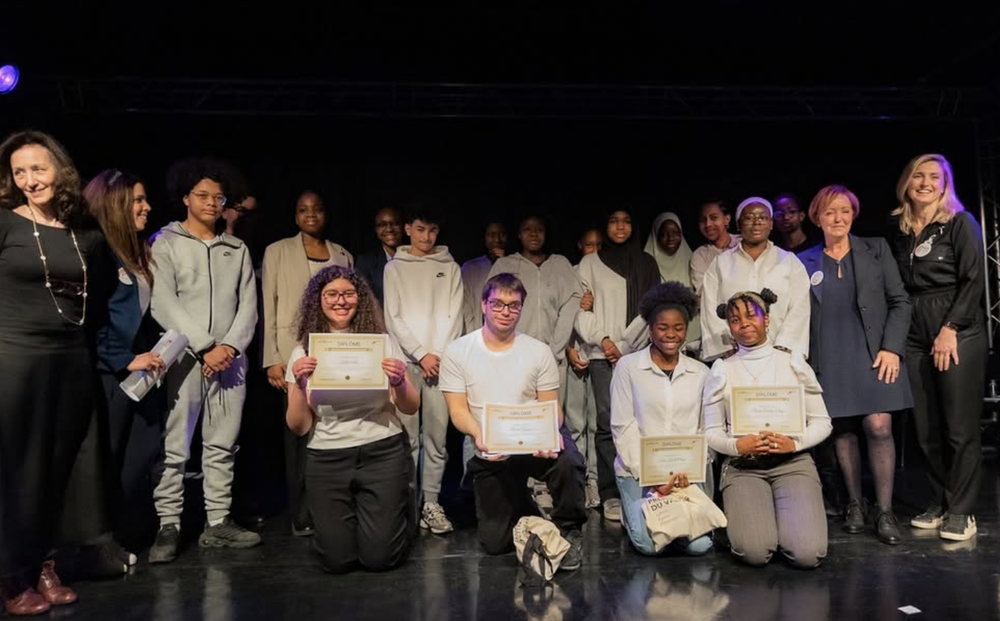
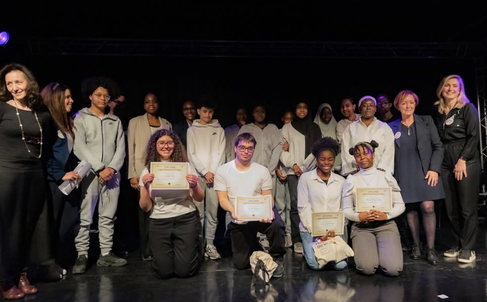

Un projet pour faire entendre les voix de demain !
 ❯
❯

 


Découvre notre projet
Le Grand Oral Citoyen est un projet qui a pour but d’aider les jeunes à développer leur éloquence en les sensibilisant aux enjeux de citoyenneté à travers des grands textes politiques. Accompagnés par des formateurs experts, ils apprennent à prendre la parole en public avec confiance et conviction.
Nos objectifs
- 🗣️ Donner aux jeunes les outils pour parler en public avec clarté et impact.
- 📚 Faire découvrir des textes fondateurs de l'histoire citoyenne française ainsi que des textes sur le féminisme.
- 🤝🏼 Renforcer la confiance en soi et l'engagement des jeunes.
Retours d'expériences
Témoignage
"J'ai connu le projet par le biais de la Maison pour tous Cesária-Évora. Pendant les trois mois de préparation, j’ai appris beaucoup de vocabulaire, et aussi à parler plus lentement ! Entre candidats, nous nous soutenions beaucoup, nous corrigions nos erreurs entre nous. Pour moi, le 8 mars est important pour que les femmes se sentent libérées. Cela m’a d’ailleurs plu que des garçons veuillent lire des textes féministes." - Témoignage de la gagnante du Grand Oral Citoyen du 08 mars 2025 à la Courneuve -
Pour en savoir plus

Vidéo : Grand Oral Citoyen 2022
Dans cette émission, retrouvez Julie Grondin (responsable du service Point Information Jeunesse), El Yamine Soum (auteur, formateur, enseignant et sociologue) et Amirouche Kebiri (participant du Grand Oral Citoyen).
Podcast VivreFM : Grand Oral Citoyen
Dans ce podcast, Emmanuel Spodar revient sur les deux finales du Grand Oral Citoyen ayant eu lieu le 08 mars 2025 à la Courneuve et à Villiers-le-bel. Pour marquer cette journée de la femme 24 jeunes ont fait résonner les textes historiques de femmes inspirantes (Simon Veil, Virgina Woolf, Joséphine Baker...).

Vidéo : Grand Oral Citoyen Amiénois 2022
Dans cette vidéo, des participants du Grand Oral Citoyen Amiénois de février 2024 témoignent de ce que leur a apporté ce projet !
Vidéo : Apprenez à maitriser votre voix
Découvrez les secrets pour maîtriser votre voix et captiver votre auditoire avec les conseils d’un expert, enseignant, conférencier, auteur et dirigeant associatif : Hamou Bouakkaz.
Émission radio : Les ateliers du Grand Oral Citoyen
Dans cette émission radio vous découvrirez : Comment se déroulent ces séances ? Qu’apporte la découverte de l’art oratoire à ces jeunes ? Rencontre avec les membres du Grand Oral Citoyen et des participants aux ateliers à la Maison de quartier Georges Brassens, à Bondy (93).